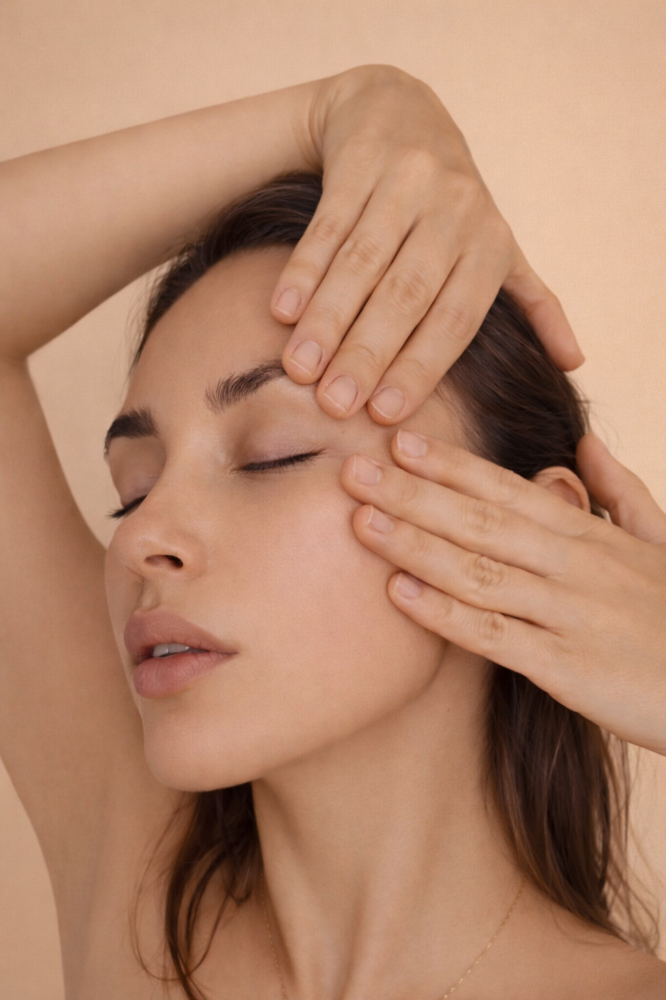

I took professional techniques of working with the face, neck, and tissues and adapted them for home practice.
Why this exists

Just like you, every morning I kept seeing how the face could look heavier and less fresh after sleep. Puffiness, tightness, and softness in the lower part of the face kept bringing me back to the question of what exactly was preventing the face from looking rested.
